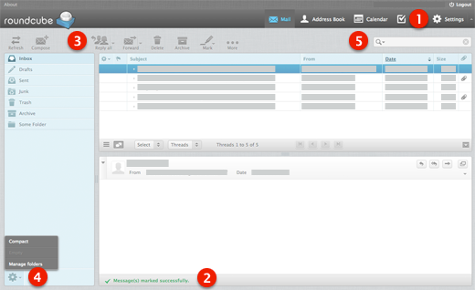

Getting Started¶
General Overview of the User Interface¶
Once authenticated, the screen of Roundcube webmail is divided into functional parts which are explained here:
(1) Application Tasks¶
The webmail application provides different main tasks such as Email, Address Book, Settings, etc. Use this list to switch from one task to another. That will reload the screen with a specific view for the selected task. Instead of switching back and forth, task screens can be opened in individual browser windows or tabs. Right-click on a task icon in the list and then choose “Open Link in New Tab/Window” from the browser’s context menu to do so.
Beside the main tasks, the button to terminate the current session (Logout) is also located here.
(2) Status Display¶
This area of the screen is dedicated to display status notifications (e.g. confirmations, warnings, errors) about the success or failure of the operations you just executed in the application. While the app is working or loading data, a notification is displayed here as well.
(3) Toolbar¶
The main toolbar is always located above the content area and allow you to perform different actions, depending on what is being shown or selected in the content part of the window. If buttons are grayed out, the according action is not available for the current selection. If a toolbar icon shows a small arrow on its right side, clicking that arrow will present you variations of the action to be executed.
Additional actions can be found by clicking the More button (if available).
(4) List Operations¶
The icons in the footer area of a list provide actions that influence the list above or the currently selected element of the list respectively. The gear icon usually opens a menu with additional actions.
(5) Search Box¶
If the currently selected task allows searching for data (e.g. for email messages or contacts), a search box is located in the upper right corner above the main content area. Enter a search term and press <Enter> on the keyboard to start searching. To reset the search, click the clear icon on the right border of the search box.
There might be search options hidden in a drop-down menu that open when clicking the search icon left in the search box.
Resizing content boxes¶
Some boxes filling the main content area of the screen can be resized. Find the resize handle between two boxes and drag it with the mouse.
Terminating the Session¶
Once your work is done on the webmail application, it’s important that you properly terminate the current session by clicking the Logout icon in (1). This will make sure that no other person accessing your computer can read or delete your emails or send them on your behalf. Simply closing the browser window is not enough to log-out!